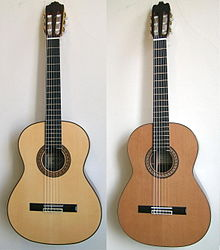

Classical guitars
The classical guitar is the member of the guitar family used in classical music. It is an acoustical wooden guitar with six classical guitar strings as opposed to the metal strings used in acoustic and electric guitars designed for popular music.
In addition to the instrument, the phrase "classical guitar" can refer to two other concepts:
The instrumental finger technique common to classical guitar—individual strings plucked with the fingernails or, rarely, fingertips
The instrument's classical music repertoire
The shape, construction, and material of classical guitars vary, but typically they have a modern classical guitar shape, or historic classical guitar shape resembling early romantic guitars from France and Italy. Classical guitar strings were once made of catgut and nowadays are made of polymers such as nylon, with a fine wire wrap on the bass strings.
A guitar family tree can be identified. The flamenco guitar derives from the modern classical, but has differences in material, construction and sound.
The term modern classical guitar is sometimes used to distinguish the classical guitar from older forms of guitar, which are in their broadest sense also called classical, or more specifically: early guitars. Examples of early guitars include the 6-string early romantic guitar (c. 1790–1880), and the earlier baroque guitars with 5 courses.
Today's modern classical guitar was established by the late designs of the 19th-century Spanish luthier Antonio Torres Jurado.

Order one Now!
Electric Guitars
An electric guitar is a guitar that uses a pickup to convert the vibration of its strings into electrical impulses. The most common guitar pickup uses the principle of direct electromagnetic induction. The signal generated by an electric guitar is too weak to drive a loudspeaker, so it is amplified before sending it to a loudspeaker. Since the output of an electric guitar is an electric signal, the signal may easily be altered using electronic circuits to add "color" to the sound. Often the signal is modified using effects such as reverb and distortion.
Invented in 1931, the electric guitar became a necessity as jazz musicians sought to amplify their sound in the big band format. During the 1950s and 1960s, the electric guitar became the most important instrument in pop music. It has evolved into a stringed musical instrument that is capable of a multitude of sounds and styles. It served as a major component in the development of rock and roll and many other genres of music.
Order one Now!
Bass
The bass guitar (also called electric bass, or simply bass;) is a stringed instrument played primarily with the fingers or thumb, by plucking, slapping, popping, tapping, thumping, or picking with a plectrum, often known as a pick.
The bass guitar is similar in appearance and construction to an electric guitar, but with a longer neck and scale length, and four to six strings or courses. The four-string bass—by far the most common—is usually tuned the same as the double bass, which corresponds to pitches one octave lower than the four lowest pitched strings of a guitar (E, A, D, and G). The bass guitar is a transposing instrument, as it is notated in bass clef an octave higher than it sounds (as is the double bass) to avoid excessive ledger lines. Like the electric guitar, the bass guitar is plugged into an amplifier and speaker for live performances.
Since the 1960s, the bass guitar has largely replaced the double bass in popular music as the bass instrument in the rhythm section.[7] While types of bass lines vary widely from one style of music to another, the bassist usually fulfills a similar role: anchoring the harmonic framework and establishing the beat. Many styles of music utilise the bass guitar, including rock, metal, pop, punk rock, country, reggae, gospel, blues, and jazz. It is often a soloing instrument in jazz, fusion, Latin, funk, and in some rock and metal styles.
Order one Now!